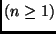
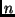
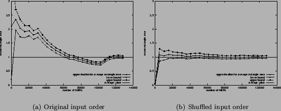

Next: Related Work Up: Applications Previous: Experiments on Spatial Data
Online Aggregation of Large Data Sets
In XXL we provide a generic aggregation operator that can be used with user defined
functions to aggregate the objects of a given iterator. The operator returns the
intermediate value of the aggregate for the input that has been consumed so far.
To get the final value just call aggregator.last() to consume the
entire iterator the aggregator is based on. We provide e.g. standard deviation,
variance, and three different kind of average functions. Average just computes
the average value repetitively, while two other operators additionally compute
a confidence interval for the intermediate results. The evaluation of the confidence
interval in one operator is according to Hoeffding's inequality and holds for
every number  of already processed objects. The other operator is based
upon central limit theorems and only holds for large . Furthermore, the given input iterator must provide the objects to
aggregate in randomly distributed order thus the already processed objects could
be considered as a sequence of independent and identically distributed (i.i.d.)
random variables [HHW97]. In our experiments we used the
operator based upon central limit theorems to compute the average area of the
rectangles of the LA_ST dataset. In Figure 3a
we show the average aggregation of the area processing the input data in originally
order. Figure 3b shows the aggregation
with randomly shuffled rectangles using our ShuffleCursor. The bounds of
the computed confidence interval are denoted as lower bound and upper
bound. Obviously, Figure 3a
shows a correlation between the lower x value and the area. Therefore the sequence
of already processed objects could not be considered as a (i.i.d.) sample
whereas shuffling provides a useful intermediate aggregation value for just processing
a few objects. This shows dramatically the importance of ensuring the assumption
of having a randomly distributed sequence as input for online aggregation. Nonetheless
online aggregation could be a powerful tool for processing large aggregation queries
where approximate answers are sufficient. So it is very surprising that today's
common DBMS do not support such a useful instrument (except Informix to the best
of our knowledge). With XXL it is easy to use your own aggregation functions for
online aggregation purposes even with additionally features such as computing
confidence bounds. In [HHW97] actually confidence bounds for other
aggregation functions like variance and standard deviation have been developed.
Figure 3:
Online aggregator for large data sets
|  |
Next: Related Work Up: Applications Previous: Experiments on Spatial Data
Bernhard Seeger
2001-10-11